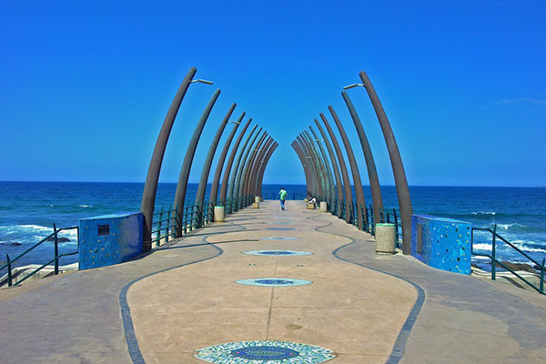
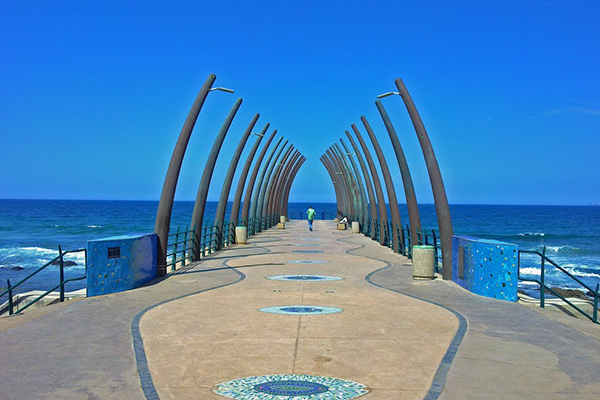

Visit South Africa
With its diverse people and cultures, endless shores, majestic mountains, cosmopolitan cities, and haunting
semi-deserts, South Africa is a world in one country. The “Rainbow Nation,” (a term coined by Nobel Peace
Prize winner, Archbishop Desmond Tutu), caters to all travellers – whether you’re a couple on a romantic
African safari, a familymaking memories, 5-star luxury-seekers, or a group of friends in search of adventure.
For first-time visitors to Africa, South Africa provides something of a snapshot experience. Here, you can
enjoy a classic Big 5 safari, a sun-sand-and-sea beach holiday, and a unique culture trip. Plus, you can
take in some world-class attractions, such as Table Mountain, the Garden Route, Robben Island, Soweto, the
Cape Winelands and more.
 

From cosmopolitan Cape Town to the Afro-powerhouse of Johannesburg, each of South Africa’s cities has a personality of its own. While Cape
Town has a reputation for being the country’s “little Europe,” Johannesburg, the economic centre of South Africa, is known as the “City of
Gold.” Durban, in KwaZulu-Natal, enjoys a proud Indian heritage, while Port Elizabeth in the Eastern Cape traces its history back to the 1820
English Settlers. Pretoria, the nation’s capital, is famous for its purple-blooming Jacaranda trees and historical architecture; and Kimberley,
home to The Big Hole, is where to go to explore South Africa’s exciting diamond-rush history.
From cosmopolitan Cape Town to the Afro-powerhouse of Johannesburg, each of South Africa’s cities has a personality of its own. While Cape
Town has a reputation for being the country’s “little Europe,” Johannesburg, the economic centre of South Africa, is known as the “City of
Gold.” Durban, in KwaZulu-Natal, enjoys a proud Indian heritage, while Port Elizabeth in the Eastern Cape traces its history back to the 1820
English Settlers. Pretoria, the nation’s capital, is famous for its purple-blooming Jacaranda trees and historical architecture; and Kimberley,
home to The Big Hole, is where to go to explore South Africa’s exciting diamond-rush history.
From cosmopolitan Cape Town to the Afro-powerhouse of Johannesburg, each of South Africa’s cities has a personality of its own. While Cape
Town has a reputation for being the country’s “little Europe,” Johannesburg, the economic centre of South Africa, is known as the “City of
Gold.” Durban, in KwaZulu-Natal, enjoys a proud Indian heritage, while Port Elizabeth in the Eastern Cape traces its history back to the 1820
English Settlers. Pretoria, the nation’s capital, is famous for its purple-blooming Jacaranda trees and historical architecture; and Kimberley,
home to The Big Hole, is where to go to explore South Africa’s exciting diamond-rush history.
Good To Know
County : South Africa
Languagies spoken : English, Afrikaans, Zulu, Xhosa,
Tswana, Tonga, South Sotho, North
Sotho, Venda, Ndebele, Swati
Currency used : South African Rand (ZAR)
Climate : Typically warm dry summers and cold winters
(snow only in high-lying areas). Much of the
coastal regions are typified by temperate
climates, while the interior is often dry during
winter.